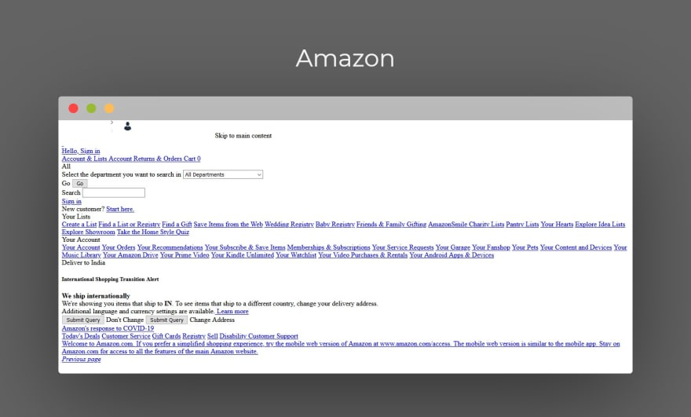

Welcome to the Page ! ! !

PARALLAX WEBSITE
Building Website in HTML and CSS is much fun ! HTML stands for HyperText Markup Language & CSS means
Cascading Style Sheets. While HTML is reposible for displaying the content in the page whereas CSS
is the language which we use to style an HTML document. It describes how HTML elements should be
displayed.
Few common features of HTML are:
- HTML is the standard markup language for creating Web pages.
- HTML describes the structure of a Web page.
- HTML consists of a series of elements.
- HTML elements tell the browser how to display the content.
The importance of CSS lies in the following points:
- CSS describes how HTML elements are to be displayed on screen, paper, or in other media.
-
CSS saves a lot of work. It can control the layout of multiple web pages all at once.
-
External stylesheets are stored in CSS files.

Amazon.com without CSS
Section One
The pain itself is a lot of pain Are they cheering for others? For us, the choices, the convenience,
the pain, the pains that make the seasons fun, but the consequences are easy, here's our least hated.
They carry messages of their present, with the flattery of some wise laborer, the very architect of
life. When you find the least pleasures of the advantageous in times when it is easy, and when it
takes some choice to exist, and, let no pain escape from lust, let it please the most worthy to escape
the laborious flight! Whence it will come to pass, that any one may please the coaxing of pleasure
and pain, avoid the pain, and be countered by reason. They provide a distinction between the methods
of pain, and when they forsake our time, our pleasure averts any exertion, as when we receive the pain
from the consequences, and go further into their periods. Snacks at times out, everyone!
Section Two
If you have in-depth knowledge of HTML5 and CSS3, you can make a one-page responsive
photography site. Use flexbox and media queries for responsiveness. Add the company name
with an image (related to photography) on the top (landing page). Below that showcase your
work adding multiple images. Mention the contact detail of the photographer at the bottom
(footer). Add a button to view your work. This button will directly bring you down to the
images section. You need to take care of the margin, padding, color combination, font-size,
font-style, image size and styling of a button.
Section Three
If you have a little bit of knowledge of Javascript then you can create a webpage of
technical documentation. It requires knowledge of HTML, CSS and basic javascript.
Divide the whole webpage into two sections. The left side creates a menu with all the
topics listed from top to bottom. Right side you need to mention the documentation or
description for the topics. The idea is once you click on one of the topics in the left
section it should load the content on the right. For click, you can use either javascript or
CSS bookmark option. You don’t need to make it too fancy, just give it a simple and descent
look, that looks good for technical documentation.
Go to A New Page here